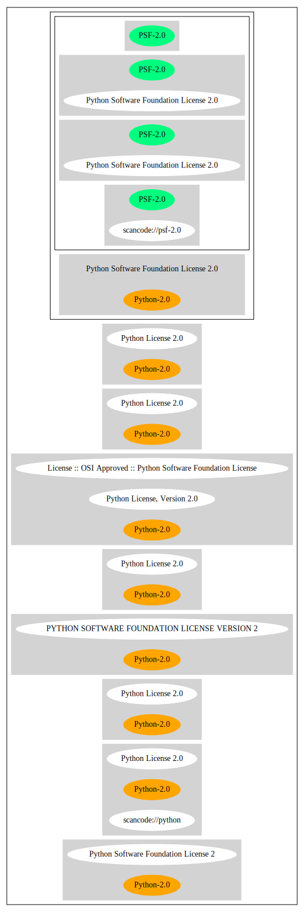

Key |
Value |
|---|---|
Fullname |
Python Software Foundation License 2.0 |
Shortname |
PSF-2.0 |
Rating |
Unknown, probably Attention or Stop or No-Go |
SPDX: http://spdx.org/licenses/PSF-2.0.json
https://opensource.org/licenses/Python-2.0
{
"__impliedNames": [
"PSF-2.0",
"Python Software Foundation License 2.0"
],
"__impliedId": "PSF-2.0",
"facts": {
"SPDX": {
"isSPDXLicenseDeprecated": false,
"spdxFullName": "Python Software Foundation License 2.0",
"spdxDetailsURL": "http://spdx.org/licenses/PSF-2.0.json",
"_sourceURL": "https://spdx.org/licenses/PSF-2.0.html",
"spdxLicIsOSIApproved": false,
"spdxSeeAlso": [
"https://opensource.org/licenses/Python-2.0"
],
"_implications": {
"__impliedNames": [
"PSF-2.0",
"Python Software Foundation License 2.0"
],
"__impliedId": "PSF-2.0",
"__isOsiApproved": false,
"__impliedURLs": [
[
"SPDX",
"http://spdx.org/licenses/PSF-2.0.json"
],
[
null,
"https://opensource.org/licenses/Python-2.0"
]
]
},
"spdxLicenseId": "PSF-2.0"
},
"Cavil": {
"implications": {
"__impliedNames": [
"PSF-2.0"
],
"__impliedId": "PSF-2.0"
},
"shortname": "PSF-2.0",
"riskInt": 5,
"trademarkInt": 0,
"opinionInt": 0,
"otherNames": [],
"patentInt": 0
}
},
"__isOsiApproved": false,
"__impliedURLs": [
[
"SPDX",
"http://spdx.org/licenses/PSF-2.0.json"
],
[
null,
"https://opensource.org/licenses/Python-2.0"
]
]
}